In call of duty multiplayer zijn er verschillende maps waar je op kan spelen.
Deze maps kan je verdelen in 2 categorien: de normale 6 tegen 6 maps, en de 2 tegen 2 gunfight maps.
Er zijn ook speciale maps die in groundwar gebruikt worden maar die behandelen we in een aparte pagina.
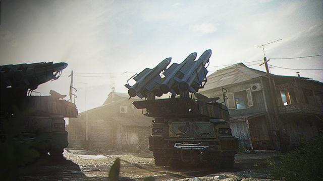
Arklov peak is een grote map bedoeld voor 6 v 6 matches.
De map bestaat uit een klein dorpje, 9 km buiten Kastovia.
Het dorp is aangevallen: een huis is compleet verwoest en op een open plek staan er rakkettenwerpers.
Hoewel het een 3 lane map is en het voor 6 v 6 ontworpen is, is de map volgens de comunity iets te groot en heeft het weinig "flow", wat je verwacht van een call of duty map.

Azhir cave is wederom een grote map gemaakt voor 6 v 6 matches. De map is gevestigt in dorpje naast een grote grot, gelegen in Urzikstan. Voor de mensen die de campaign hebben gespeeld: de map ligt boven de weg waar de missie:'Highway of death', heeft plaatsgevonden.
De map is gevestigd in de woestein en heeft een 3 lane design. Helaas is de map iets te groot, maar deze map bied wel veel variatie en zorg voor bijzondere momenten.
Ook is een een Nacht versie van de map gemaakt met night-vision goggles.
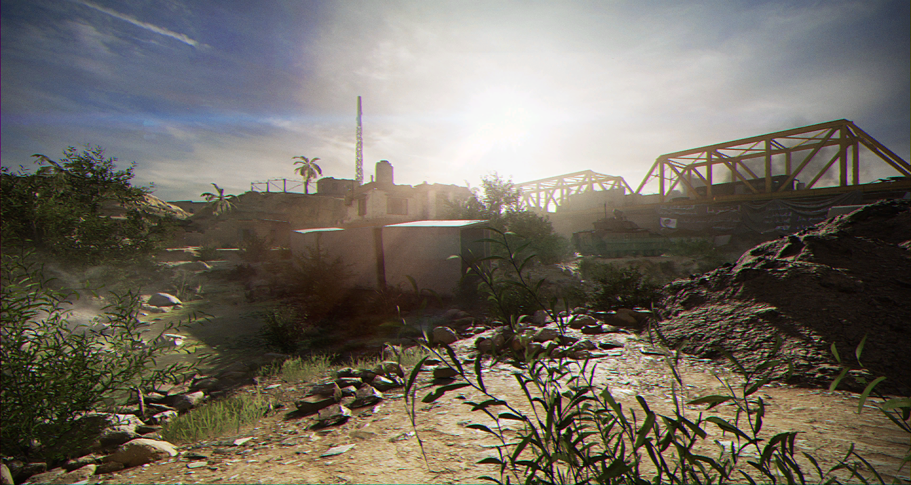
Euphrates Brige staat helaas bekend als de slechtste call of duty map ooit gemaakt.
Deze map is gevestigd in een opgedroogde rivier in Urzikstan, met in het midden een brug en aan de andere 2 kanten gebouwen.
Het grote probleem met deze map, is dat het te groot is (wederom voor 6 v 6), en er in elk potje mensen spawnkillen op de brug.
Als je als eerste bij de brug bent heb je het potje al gewonnen.
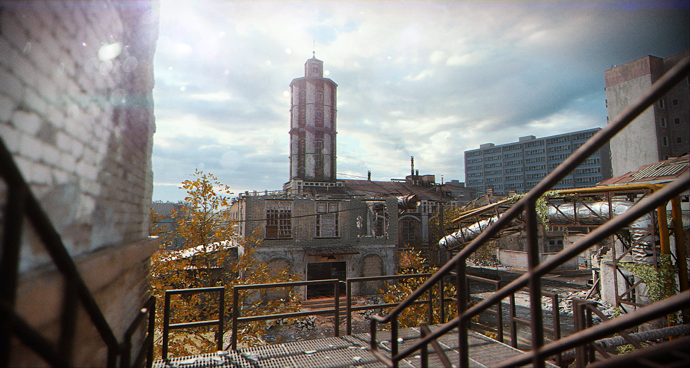
Grazna Raid is een prachtige map gelegen 5 kilometer buiten Venskaya.
Het speelt zich af in een verlaten buitenwijk van een stad in Rusland.
In de vroege dagen van het spel kon deze map alleen gespeeld worden in 6 v 6, en werd daarom erg gehaat aangezien het een best grote map is, maar nu is het een 10 v 10 map geworden.
Het leuke aan de map is dat er in de verte een groot reuzerad te zien is, wat verwijst naar de klassieke Cod4 missie: all ghillied up, in chernobyl.
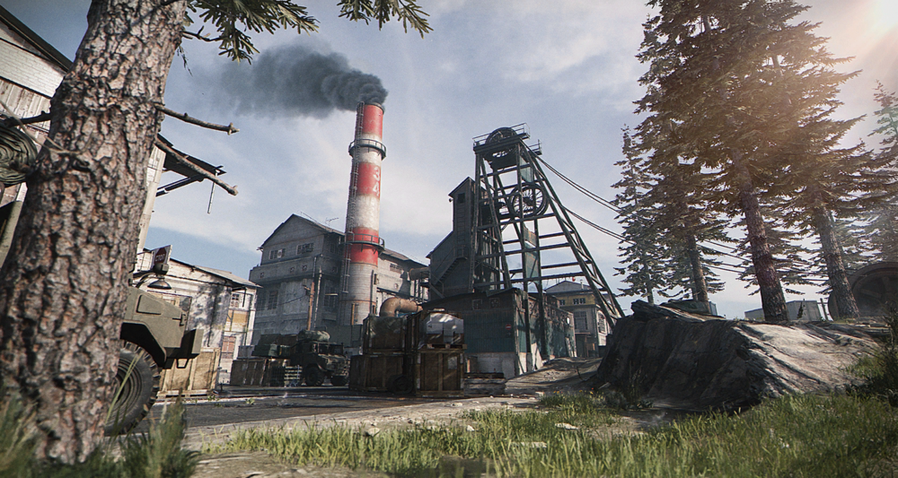
Gun Runner is een van de betere maps in modern warfare.
Deze maps vind zich plaats in-en rondom een kool mijn in kastovia.
De map heeft van alles wat: aan de linker kant veel gangetjes die bedoeld zijn voor close range combat, en aan de andere kant een lang open stuk dat idiaal is voor snipers.
De map staat vooral bekend om de geweldige search en destroy matches en van deze map is er ook een nacht versie van gemaakt.
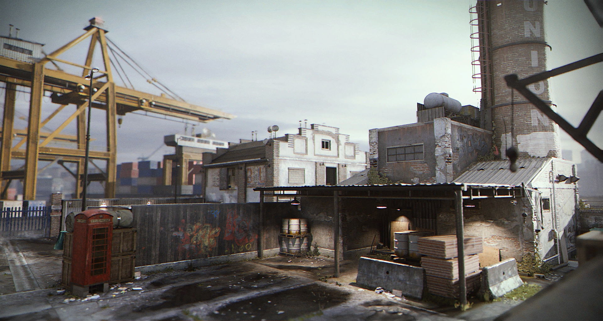
Hackney Yard is de op een na kleinste map in Modern Warfare en is daarom ook een van de betere maps.
De map bevind zich in de haven van Londen en heeft een 3 lane design met aan de ene kant een groot gebouw, in het midden een open plek die bedoeld is voor mid range cobat een aan de andere kant kleine gangentjes met een ander gebouw.
Verticaal gezien staan er aan beide kanten ook 2 gebouwen met meerdere verdiepingen zodat er van de ene naar de andere kant van de map ge-sniped kan worden.
Oopk van deze map is er een nacht versie van gemaakt.
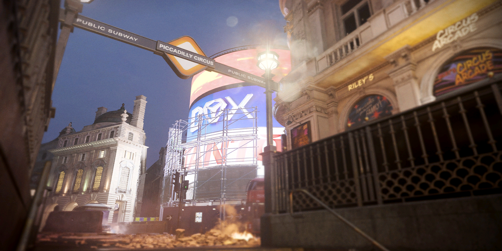
Piccadilly is niet geliefd in de cod commuinity maar persoonlijk vind ik dit een geweldige map.
De map is een namaak van Piccadilly Circus in Londen, ik ben hier persoonlijk geweest en ik kon daar gewoon de weg vinden door MW.
Het is een nacht map (zonder night vision) waar je in alle gebouwen kan lopen en in het midden staan er een paar typische Londense bussen.
Ondanks het aparte design is de domination gamemode geweldig op deze map en is het een van de mooiste mappen van de game.
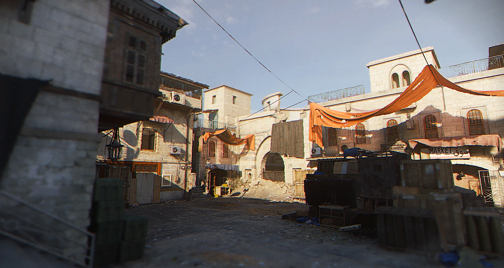
Rammaza is map die zich afspeeld in een dorpje 14 km buiten El Nadaar in Urzikstan, in de woestijn.
Dit keer hebben ze een twist gegeven aan de 3 lane design door aan de linker kant een deel te maken waar je op het dak kan lopen en op 1 punt een toren in met meerdere verdiepingen.
In het midden staat een klein marktje en aan de rechter kant staat een overdekt deel met huisjes waar je in kan lopen.
Deze map kan ook in de nacht gespeeld worden.
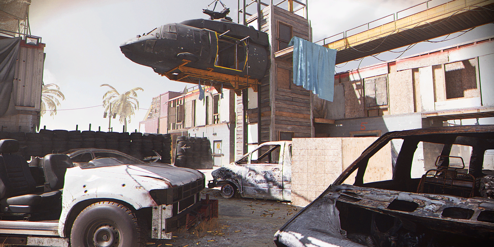
Shoot House is zonder twijfel de beste map in de game, puur omdat het gwoon simpel is.
De map speelt zich af in Urzikstan in een Militaire training faciliteit midden in de woestijn.
De map heeft het 3 lane design en is super klein vergeleken met de rest en is daarom super populair.
Call of Duty spelers houden namelijk van keine mappen omdat de pace van de game dan snel is: je hoeft niet ver te lopen om bij de enemies te komen en je bent bijna constant bezig in een gevecht.
De map bevat aan de 2 buitenste kanten gecrashde autos en containers en in het midden zit een lange gang met aan beide kanten muurtjes om de spawn af te schermen.
In Domination zijn de vlaggen ook precies geplaatst zoals je verwacht: 1 aan de linker kant, 1 in het midden en 1 aan de rechter kant.
Deze map ios voor elk wapen geschikt: als je voor close range wilt spelen pak je de zijkanten en als je wilt snipen kan dat in het midden.
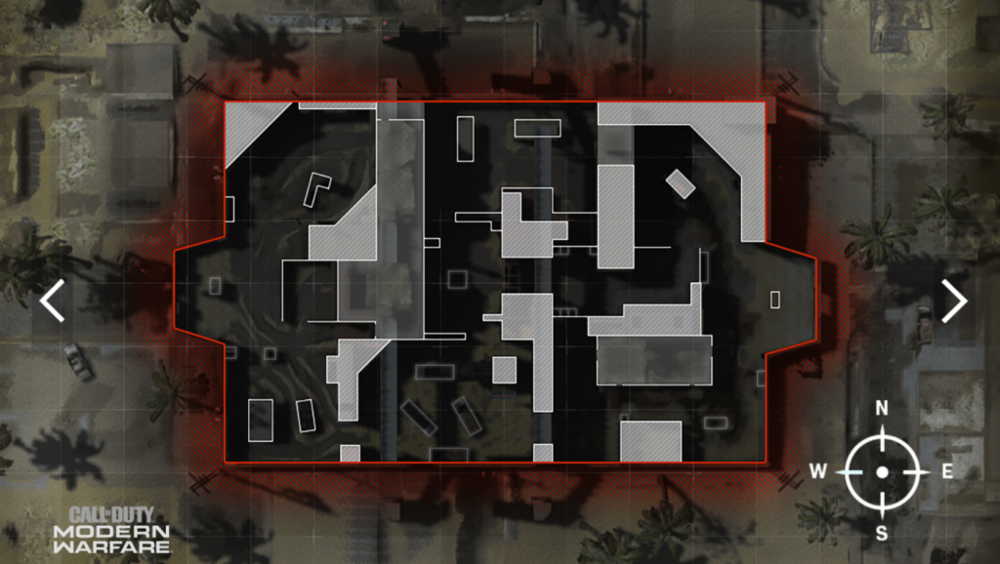
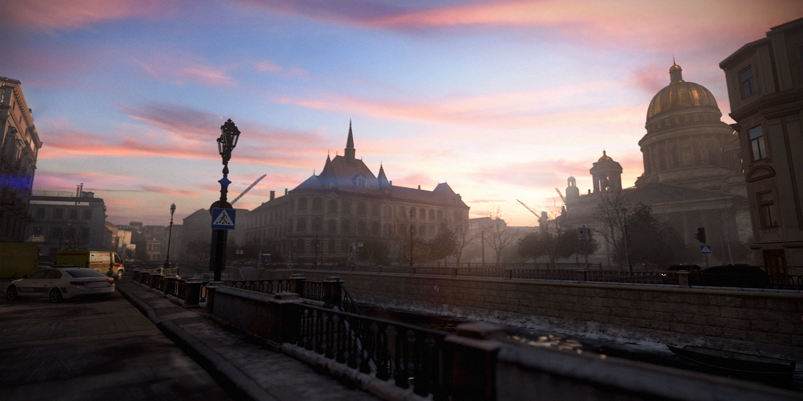
St. Petrograd is geïnspireerd op Moskou en is legegen in de stad genaamd St. Petrograd in Kastovia.
De map bevind zich dus in de straten van de stad, aan de rivier de Moskva.
In de straten van de stad staan nog lege voertuigen en in de map staan veel gebouwen waaronder een bar en een hotel.
De map komt ook voor in de campaign missie Old Comrades waar je in Moskou de hoofdvijand: The Butcher achternazit.
Dat waren alle normale mappen die bedoelt zijn voor 6 v 6 of hoger aantallen. In de game zit er een gamemode ganeemt Gunfight, die gespeeld word in veel kleinere mappen, ginfight is namelijk 3 v 3 of lagere aantallen. Meer informatie over de gamemode vind je in de pagina: Gamemodes, maar hier zijn de gunfight maps:
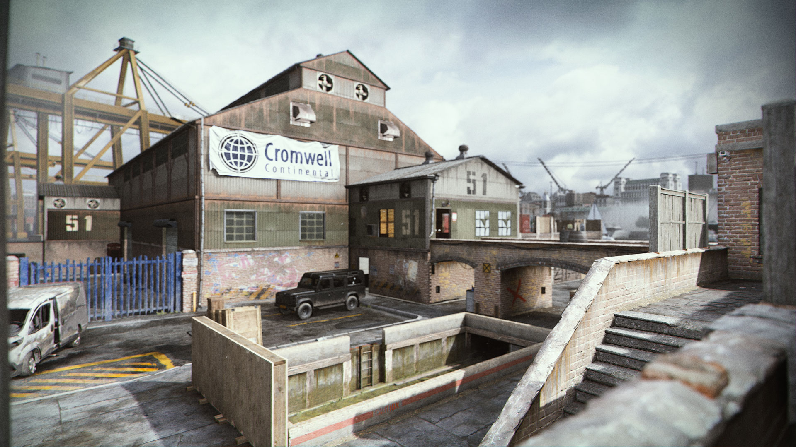
Docks is de eerste gunfight map die zich plaats vind in de haven van Londen.
De map is in de standaart 3 lane vorm ontworpen met aan beide kanten gebouwen en in het midden een brug die de gebouwen verbinden.
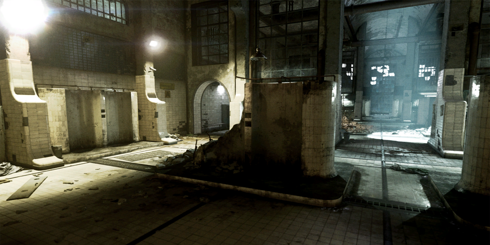
Gulag Showers is de bekendste gunfight map: de map bevind zich in de gulag uit Modern Warfare 2.
De map werd ook aan het begin van Warzone gebruikt als de Gulag waar je een 1 v 1 moet winnen. om terug te komen in het spel.
Het is een oude douche kamer die vernield is met in het midden muren.
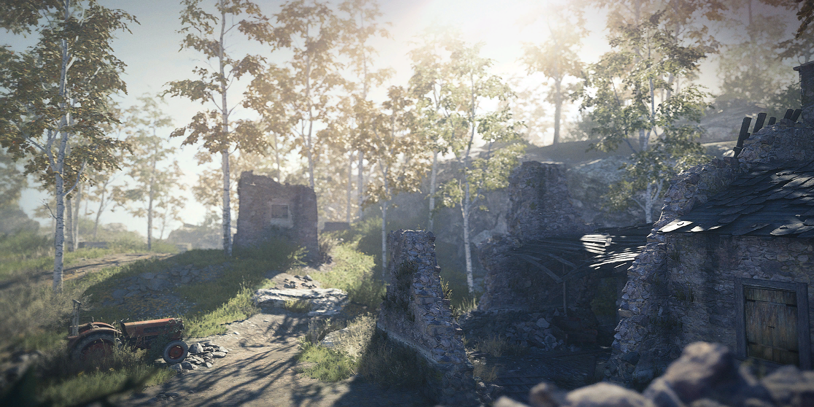
Hill is een gunfight map in het bos naast een ravijn.
Aan de rechter kant loopt een heuvel naar boven en in het midden bevind zich een loopgraaf.
In deze map zit ook de Predator easteregg aan de linker kant in een boom.
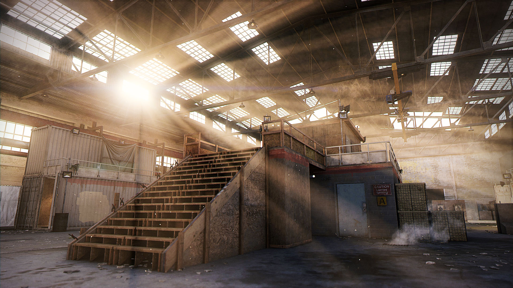
King is persoonlijk mijn favoriete gunfight map, het is een map die bestaat uit hout en containers in een hangar.
Aan beide zijkanten staan er containers en in het midden staat een constructie waar je omhoog kan lopen en onder de constructie zit nog een tunnel zodat je op de bengane grond van de ene naar de andere kant kan komen.
De map is super simpel en word ook aangeraden als je gun game speelt.
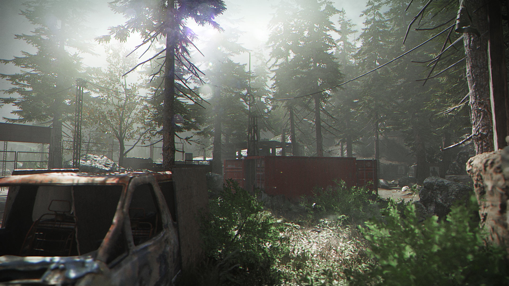
De naam zegt het al: Pine bevind zich in een dennenboom bos.
In de map zitten er aan beide kanten schuin tegenover elkaar hutjes waar je doorheen kan lopen en in het midden loopt een beekje met een container die beide kanten verbind.
Ook zitten er gecrashde autos en rotsen in de map als opstakel en een groot deel van de map bestaat uit wat hoger gras.
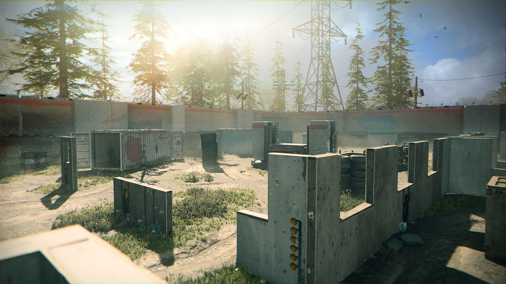
Speedball is de eerste map die ik ooit gespeeld heb en het is een geweldige map.
Een potjhe start met 2 lichten op een muutrje voor je die op groen gaan enin het midden staat een groot van cement gameekt muurtje.
Aan de Linker kant staan er allemaal houten muurtjes die voor cover zorgen en aan de rechter kant staan 2 schuine containers tegenover elkaar.
De map is erg snel en zorgt voor geweldige matches.
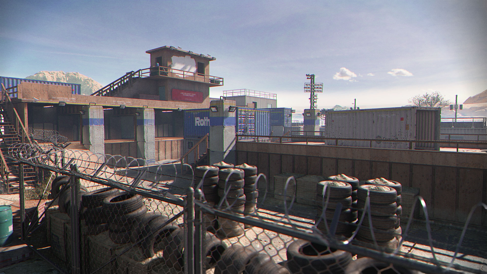
Stack is de laatste gunfight map en vind ik persoonlijk ook de slechtste map.
Je spawnt al op een verhoging met weinig cover en een trap naar beneden.
In het midden staat ook een verhoging met een container in het midden en aan beide kanten staan bandenstapels die helaas voor weinig cover zorgen.
Over het algemeen word je snel gespawnkilled in deze map en is hij daarom niet geliefd.
Dat waren alle mappen, de enige die we nog niet besproken hebben, zijn de groundwar mappen maar die kan je vinden op de pagina: Groundwar.